Even though I am mad my favorite Froyo spots now have a 2 block queue after having gone viral recently, it's okay — we are not gatekeeping. This website is made to spread the love of froyo.
There’s no right way to build a froyo — but I personally believe in keeping it simple. Some people treat it like a science experiment, layering ten sauces and every topping in sight. I like to think of it more like a small ritual.
My go-to is usually one clean base and one small detail: fresh strawberries, rainbow sprinkles, or sometimes nothing at all. Just froyo, cold air, and a slow walk home.
These three little steps are less about rules and more about feeling — pick what you like, keep it light, and don’t overthink it. Froyo is supposed to be easy.
A small guide of my favorite froyo moments — sorted by area, because NYC is chaos.

If you have a spot that deserves a pin on the map, send it my way. Bonus points if it’s a little hidden, a little nostalgic, and very cold.
Or email me directly: francastaing@gmail.com